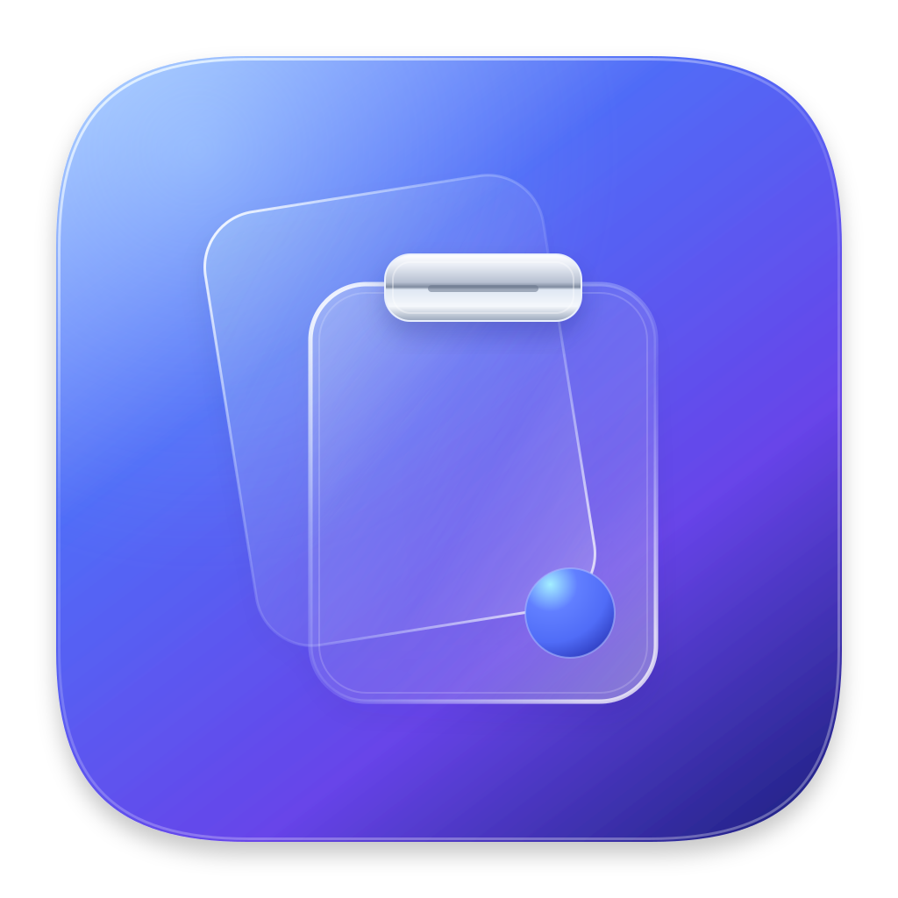
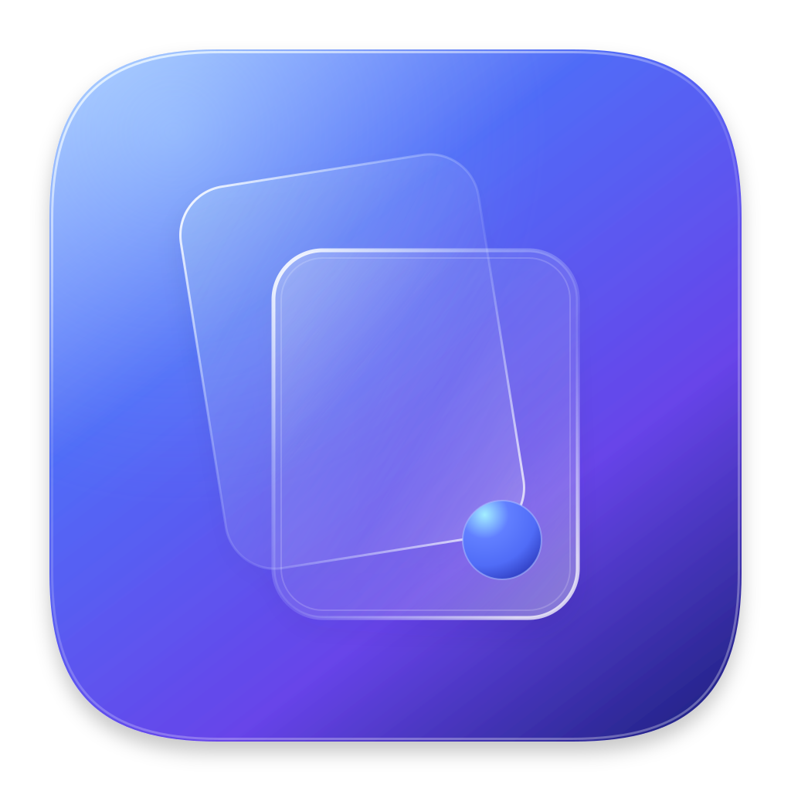
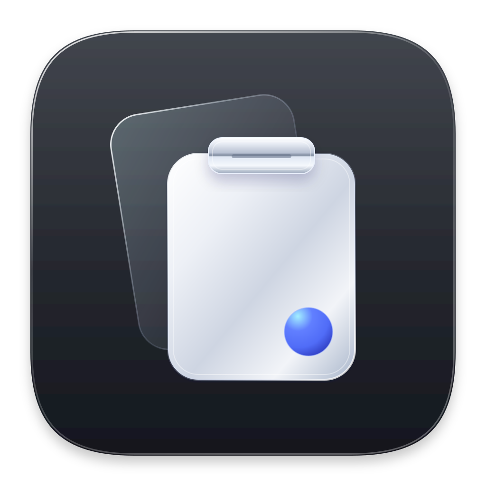
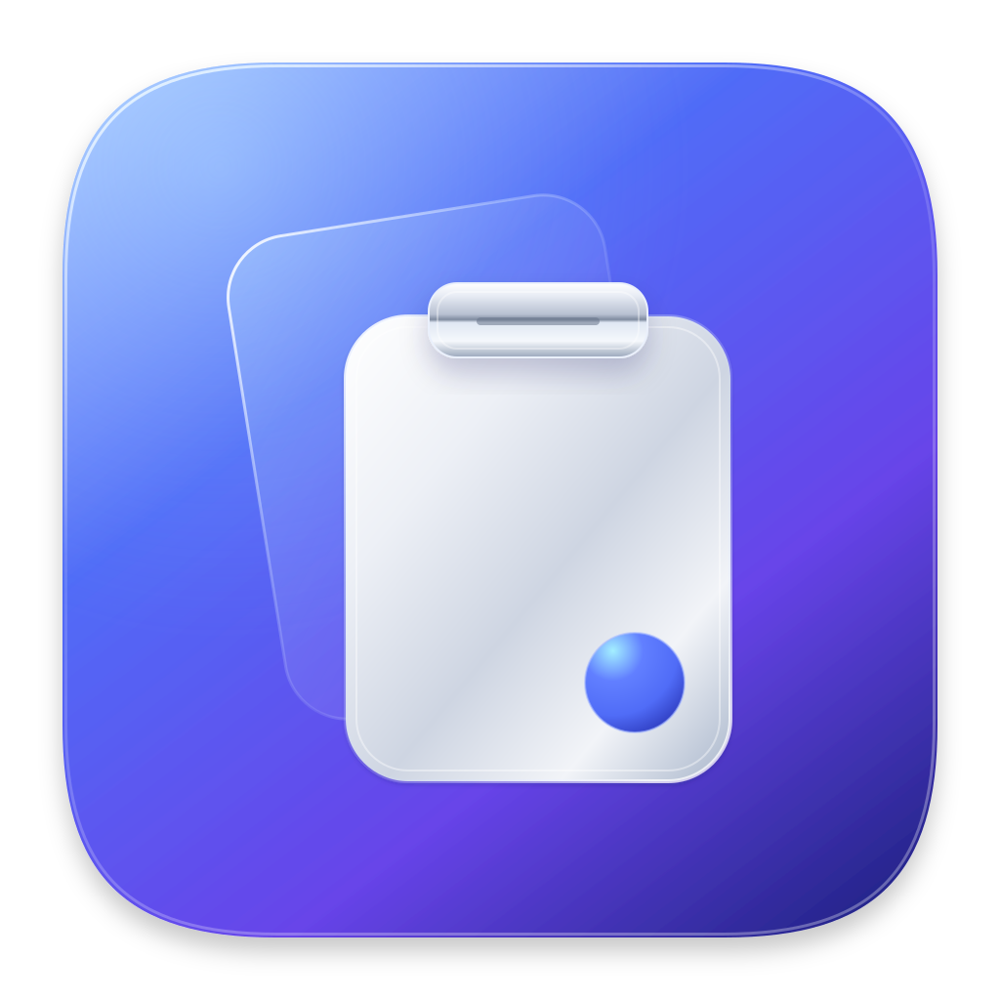
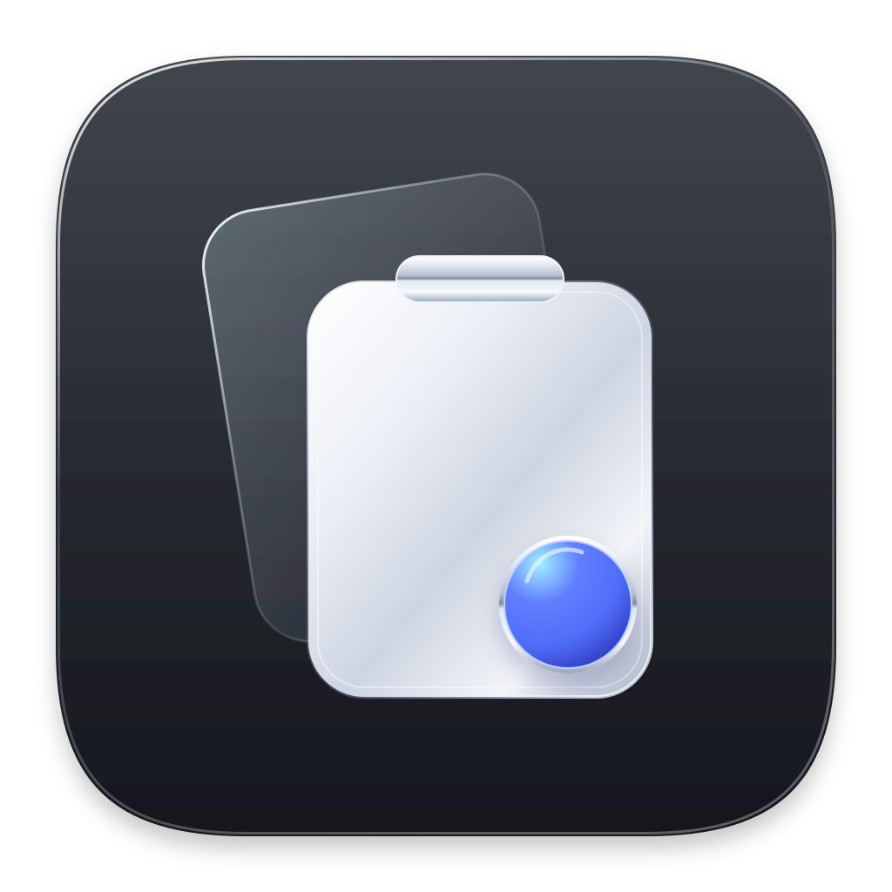

04 · Dual Glass
The closest evolution of Frost. Transparent layers and a slim chrome clip.

05 · Glass Dot
The glass direction with a larger indigo dot. Rear edges remain visible through the front.

06 · Pure Copy
More abstract. Remove the metal clip entirely and keep just the glass-copy silhouette.

07 · Silver Dot
Your silver direction, simplified. No lines, a glass copy behind it, and a much bigger dot.

08 · Indigo Alloy
The same silver object on the stronger blue-violet field, rather than graphite.

09 · Orbit
Push the dot further: an oversized blue glass lens with a silver rim and a simpler top tab.